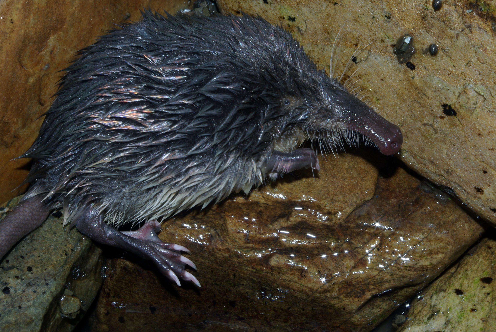

Stop 1; Animals
Die Tiere sehen in den Pyränen recht, komisch aus... Zum Beispiel gucken sich diese Tiere bitte an;
Aber zum Beispiel dies ist eine recht schönes Tier, das sogenannte;
Stop: 2; Food
Die Tiere sehen in den Pyränen recht, komisch aus...
Zum Beispiel gucken sich diese Tiere bitte an;
Stop: 3; View
Stop: 4; Culture
Stop: 5; Fun Facts
Stop: 6; Aktivitäten
Stop: 7; Abschluss Essen
Pyränen ist eine tolle Insel, dies sollte euch eine Art von einblick geben. Hoffentlich haben wir euch motiviert die Pyränen zu besuchen!